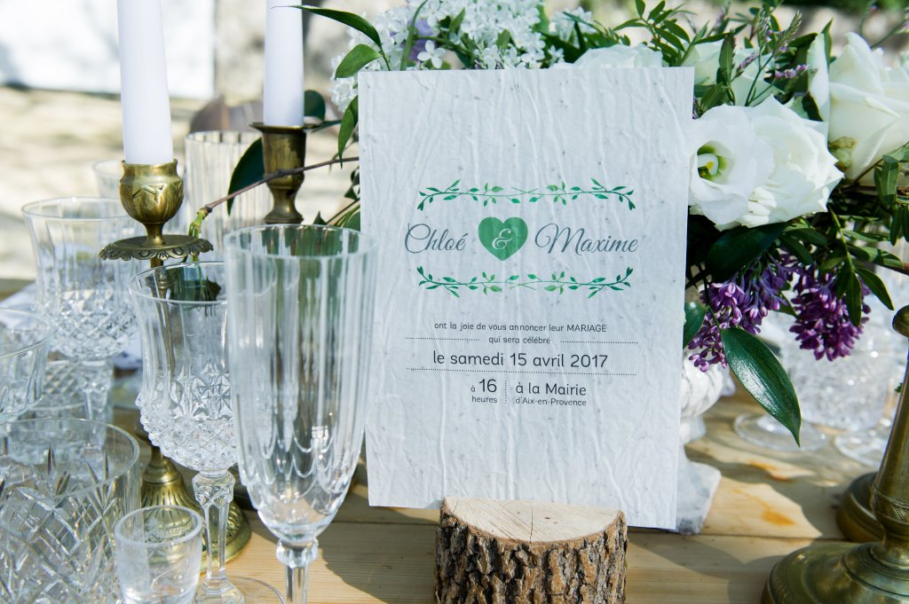
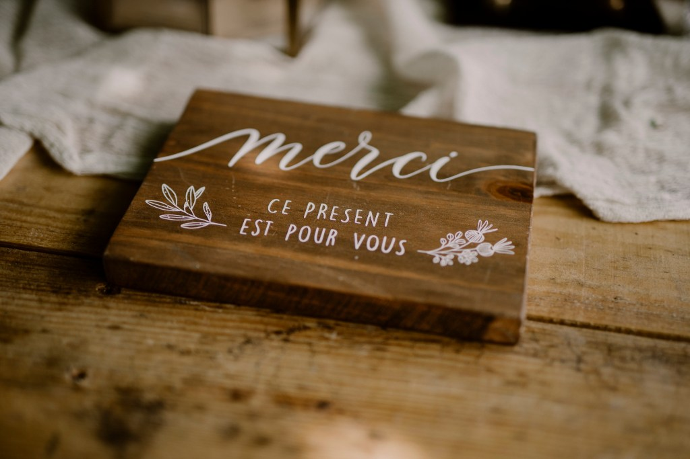
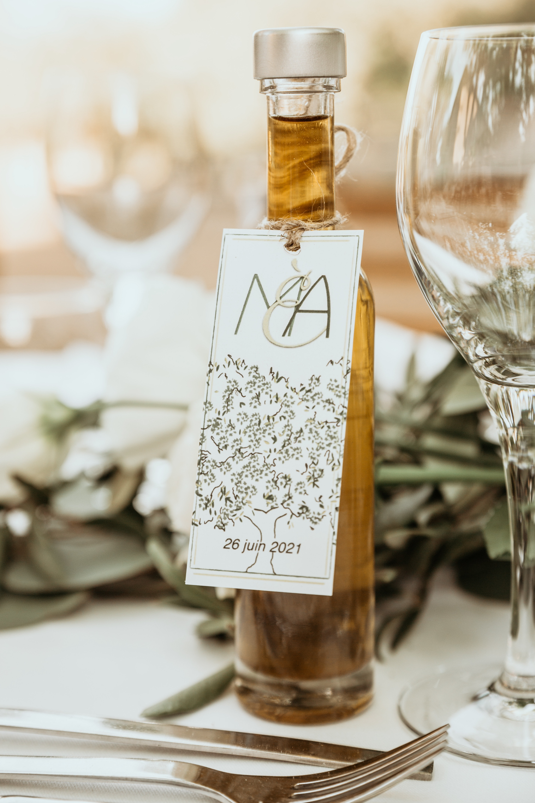

Des conseils pratiques pour un mariage éco-responsable
L’éco-responsabilité est de plus en plus présente dans les préoccupations des futurs mariés. Un mariage zéro déchet, c’est l’opportunité de célébrer l’amour tout en réduisant son empreinte écologique. Ce type d’événement est une belle manière de se rapprocher de la nature, de minimiser son impact environnemental, tout en offrant une expérience mémorable et pleine de sens. Voici des conseils pratiques pour organiser un mariage zéro déchet, sans sacrifier le style et la magie de votre grand jour.
1. Choisir un lieu de mariage éco-responsable
Le choix du lieu est essentiel pour un mariage zéro déchet. Optez pour un espace qui s’engage dans une démarche durable : lieux en plein air, fermes, jardins ou encore des lieux qui favorisent l’utilisation de produits locaux, d’énergies renouvelables et de gestion responsable des déchets. Certains lieux sont particulièrement adaptés, proposant des solutions pour trier les déchets et minimiser la consommation d’énergie.
2. Privilégier une invitation numérique
Les invitations en papier sont souvent la première source de déchets lors d’un mariage. Pour un mariage zéro déchet, optez pour des invitations numériques ou des sites web de mariage. Vous pourrez ainsi inclure toutes les informations pratiques (horaire, plan, dress code) et mettre à jour les détails en temps réel, tout en économisant du papier et des frais d’envoi.
Si vous souhaitez tout de même envoyer des invitations imprimées, choisissez des cartes réalisées avec du papier recyclé, papier ensemencé (comme Papier Fleur) ou des matériaux biodégradables, et limitez le nombre de copies en invitant des groupes plutôt que d’envoyer des invitations individuelles à chaque invité.

3. Opter pour des décorations durables et réutilisables
Les décorations représentent une grande partie des déchets lors d’un mariage. Pour éviter cela, choisissez des éléments que vous pourrez réutiliser après le mariage, ou qui sont fabriqués à partir de matériaux recyclés ou naturels. Les fleurs en tissu, les guirlandes en bois, les panneaux en carton recyclé ou encore des bougies en cire d’abeille sont des alternatives durables aux décorations jetables.
Si vous optez pour des fleurs fraîches, privilégiez celles qui sont locales et de saison. Les fleurs séchées peuvent également être une belle option, et elles pourront être conservées après l’événement pour décorer votre maison.
4. Limiter le gaspillage alimentaire : des menus durables
Le repas de mariage peut représenter une part importante du gaspillage alimentaire. Pour éviter cela, choisissez un traiteur qui propose des menus à base de produits locaux, de saison et, si possible, bio. Vous pouvez aussi privilégier un menu végétarien ou végétalien, qui a un impact moindre sur l’environnement.
Assurez-vous que la quantité de nourriture soit bien calculée, afin d’éviter des excédents qui finiront à la poubelle. Pensez également à la gestion des restes : mettez en place un système pour récupérer les aliments non consommés. Ils pourront ensuite être redistribués à des associations locales ou conservés.


5. Limiter l’usage du plastique : des alternatives écologiques
Le plastique est omniprésent dans les mariages traditionnels, que ce soit pour la vaisselle, les décorations ou les accessoires. Pour un mariage zéro déchet, il est essentiel de réduire, voire d’éliminer, l’usage de plastique. Privilégiez des alternatives en bambou, en métal ou en verre. Par exemple, des gobelets réutilisables pour le vin ou des assiettes en céramique ou en bois peuvent être loués pour l’occasion.
N’oubliez pas non plus d’éviter les articles jetables comme les pailles en plastique, les nappes en plastique ou les confettis. Optez pour des confettis faits de fleurs séchées ou des pétales de roses, qui sont biodégradables.
6. Des tenues de mariage durables et éthiques
Les robes de mariée et les costumes de mariage peuvent aussi contribuer au gaspillage si vous choisissez des vêtements ne respectant pas l’environnement. Pour un mariage zéro déchet, vous pouvez choisir une robe de mariée en tissu bio ou vintage, ou même louer une robe au lieu de l’acheter. De plus en plus de créateurs proposent des collections de robes fabriquées à partir de matériaux durables, comme le coton bio, la soie sauvage ou encore le tencel, qui est un tissu fabriqué de manière écologique.
7. Des souvenirs d’invités utiles et durables
Les cadeaux pour les invités peuvent aussi être une source de déchets si ce sont des objets inutiles ou jetables. Pour un mariage zéro déchet, privilégiez des cadeaux utiles, réutilisables ou faits main. Par exemple, des plantes en pot, des bougies en cire d’abeille, des tote bags en coton bio ou encore des savons naturels faits maison. Ces cadeaux seront non seulement appréciés, mais ils participeront à la réduction des déchets.
J’ai dédié un article à ce sujet par ici.



8. Gérer les déchets de manière responsable
Enfin, pour un mariage zéro déchet, il est crucial de bien gérer les déchets générés pendant l’événement. Prévoyez des poubelles de tri pour le recyclage (papier, plastique, verre), et envisagez de composter les restes alimentaires. Vous pouvez aussi travailler avec des prestataires qui s’engagent à réduire au maximum les déchets produits pendant le mariage.
Conclusion : un mariage zéro déchet, une belle façon de célébrer l’amour durablement
Organiser un mariage zéro déchet est une démarche qui demande un peu de réflexion et d’organisation, mais elle permet de célébrer l’un des jours les plus importants de votre vie tout en ayant un impact positif sur l’environnement. En choisissant des options durables pour chaque aspect de votre mariage, vous contribuez à réduire les déchets, à préserver les ressources naturelles et à inspirer vos invités à adopter des comportements plus respectueux de la planète.
Un mariage zéro déchet est non seulement plus respectueux de l’environnement, mais il est aussi plus personnel, plus créatif et plus significatif. C’est un moyen parfait de célébrer l’amour tout en faisant un geste pour la planète.